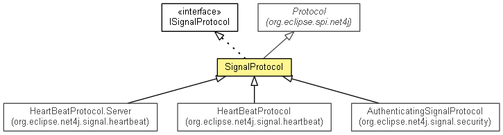

org.eclipse.net4j.signal
Class SignalProtocol<INFRA_STRUCTURE>
java.lang.Object
 org.eclipse.net4j.util.event.Notifier
org.eclipse.net4j.util.lifecycle.Lifecycle
org.eclipse.spi.net4j.Protocol<INFRA_STRUCTURE>
org.eclipse.net4j.signal.SignalProtocol<INFRA_STRUCTURE>
org.eclipse.net4j.util.event.Notifier
org.eclipse.net4j.util.lifecycle.Lifecycle
org.eclipse.spi.net4j.Protocol<INFRA_STRUCTURE>
org.eclipse.net4j.signal.SignalProtocol<INFRA_STRUCTURE>
- All Implemented Interfaces:
- IBufferHandler, ILocationAware, IProtocol<INFRA_STRUCTURE>, ISignalProtocol<INFRA_STRUCTURE>, INotifier, ILifecycle, IUserAware
- Direct Known Subclasses:
- HeartBeatProtocol, HeartBeatProtocol.Server
- public class SignalProtocol<INFRA_STRUCTURE>
- extends org.eclipse.spi.net4j.Protocol<INFRA_STRUCTURE>
- implements ISignalProtocol<INFRA_STRUCTURE>

| Methods inherited from class org.eclipse.spi.net4j.Protocol |
doBeforeActivate, getBufferProvider, getChannel, getExecutorService, getInfraStructure, getLocation, getType, getUserID, isClient, isServer, setChannel, setExecutorService, setInfraStructure, setUserID |
| Methods inherited from class org.eclipse.net4j.util.lifecycle.Lifecycle |
activate, checkActive, checkArg, checkArg, checkInactive, checkNull, checkState, checkState, deactivate, deferredActivate, doActivate, dump, getLifecycleState, isActive, isDeferredActivation |
SIGNAL_REMOTE_EXCEPTION
public static final short SIGNAL_REMOTE_EXCEPTION
- Since:
- 2.0
- See Also:
- Constant Field Values
SIGNAL_MONITOR_CANCELED
public static final short SIGNAL_MONITOR_CANCELED
- Since:
- 2.0
- See Also:
- Constant Field Values
SIGNAL_MONITOR_PROGRESS
public static final short SIGNAL_MONITOR_PROGRESS
- Since:
- 2.0
- See Also:
- Constant Field Values
SIGNAL_SET_TIMEOUT
public static final short SIGNAL_SET_TIMEOUT
- Since:
- 4.1
- See Also:
- Constant Field Values
SignalProtocol
public SignalProtocol(String type)
- Since:
- 2.0
getTimeout
public long getTimeout()
- Specified by:
getTimeout in interface ISignalProtocol<INFRA_STRUCTURE>
- Since:
- 2.0
setTimeout
public void setTimeout(long timeout)
- Specified by:
setTimeout in interface ISignalProtocol<INFRA_STRUCTURE>
- Since:
- 2.0
getStreamWrapper
public IStreamWrapper getStreamWrapper()
- Specified by:
getStreamWrapper in interface ISignalProtocol<INFRA_STRUCTURE>
setStreamWrapper
public void setStreamWrapper(IStreamWrapper streamWrapper)
- Specified by:
setStreamWrapper in interface ISignalProtocol<INFRA_STRUCTURE>
addStreamWrapper
public void addStreamWrapper(IStreamWrapper streamWrapper)
- Specified by:
addStreamWrapper in interface ISignalProtocol<INFRA_STRUCTURE>
open
public IChannel open(IConnector connector)
- Specified by:
open in interface ISignalProtocol<INFRA_STRUCTURE>
- Since:
- 2.0
close
public void close()
- Specified by:
close in interface ISignalProtocol<INFRA_STRUCTURE>
- Since:
- 2.0
waitForSignals
public boolean waitForSignals(long timeout)
handleBuffer
public void handleBuffer(IBuffer buffer)
- Handles a given (incoming) buffer. Creates a signal to act upon the given buffer or uses a previously created
signal.
- Specified by:
handleBuffer in interface IBufferHandler
- Parameters:
buffer - The buffer to be handled and otionally released.
toString
public String toString()
- Overrides:
toString in class Lifecycle
doAfterActivate
protected void doAfterActivate()
throws Exception
- Overrides:
doAfterActivate in class Lifecycle
- Throws:
Exception
doBeforeDeactivate
protected void doBeforeDeactivate()
throws Exception
- Overrides:
doBeforeDeactivate in class Lifecycle
- Throws:
Exception
doDeactivate
protected void doDeactivate()
throws Exception
- Overrides:
doDeactivate in class org.eclipse.spi.net4j.Protocol<INFRA_STRUCTURE>
- Throws:
Exception
handleChannelDeactivation
protected void handleChannelDeactivation()
- Overrides:
handleChannelDeactivation in class org.eclipse.spi.net4j.Protocol<INFRA_STRUCTURE>
provideSignalReactor
protected final SignalReactor provideSignalReactor(short signalID)
createSignalReactor
protected SignalReactor createSignalReactor(short signalID)
- Returns a new signal instance to serve the given signal ID or
null if the signal ID is invalid/unknown
for this protocol.
isSendingTimeoutChanges
protected boolean isSendingTimeoutChanges()
- Returns
true by default, override to change this behaviour.
- Since:
- 4.1
Copyright (c) 2004 - 2012 Eike Stepper (Berlin, Germany) and others.